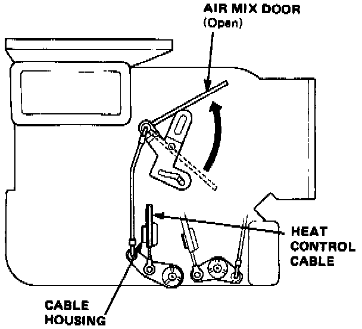

Heater Control Valve Cable: Adjustments
HEAT CONTROL CABLE ADJUSTMENT AND INSTALLATION
1. Turn the temperature control dial to max HOT.

2. Open the air mix door, then connect the end of heat control cable to the arm, and snap the cable housing into the clamp.
NOTE: After installation, check that the cable moves smoothly and the door fully opens and closes when operating the control dial.